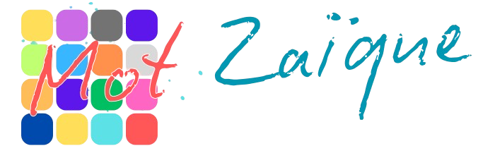
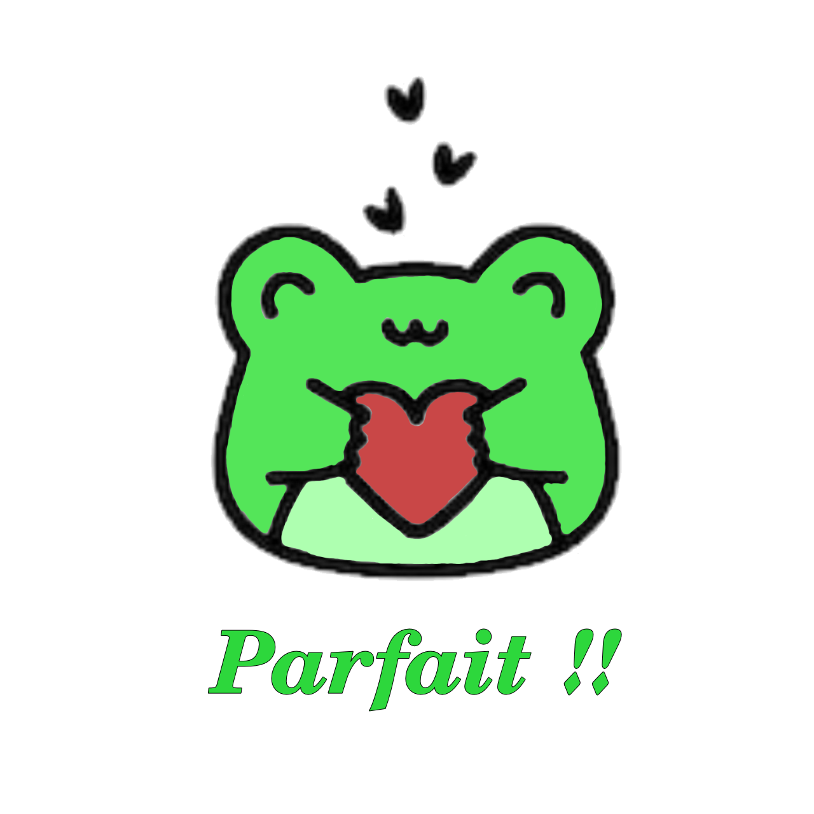

La méthode PECS
La méthode PECS (Picture Exchange Communication System) est un "système de communication alternative et augmentée" destiné aux personnes ayant des difficultés à s’exprimer verbalement, notamment les enfants atteints de troubles du spectre autistique (TSA).
Développée en 1985 par Andy Bondy et Lori Frost, cette méthode repose sur l'échange d'images pour initier et structurer la communication.
1 - Principe de Fonctionnement
PECS se base sur l’association entre une image et un besoin spécifique.
Le bénéficiaire apprend à associer une image à un objet, la sélectionner et la remettreà un interlocuteur en échange de l'objet ou de l'action désirée.
Cette méthode favorise ainsi une communication active et fonctionnelle.
2 - Les Six Phases de PECS
- Initiation de l'échange :
L’utilisateur apprend à donner une image pour obtenir un objet désiré. - Généralisation :
L’échange se fait avec plusieurs partenaires et dans différents contextes. - Discrimination des images :
L’utilisateur apprend à choisir parmi plusieurs images celle correspondant à son besoin. - Structuration de la phrase :
Introduction d'une bande phrase avec des pictogrammes pour former une demande complète (ex. "Je veux" "manger" "une pomme"). - Réponse à une question :
L’utilisateur apprend à répondre à des questions simples comme "Que veux-tu ?". - Initiation et commentaire :
Il commence à exprimer des observations, des émotions ou des besoins spontanément.
3 - Les avantages de la méthode PECS
- Encourage l’initiation de la communication.
- Réduit les frustrations liées aux difficultés d’expression.
- Peut favoriser l’émergence du langage oral chez certains utilisateurs.
- Adaptable à différents âges et niveaux de compréhension.
Ce projet vous est proposé par FLORENCON Alycia, BRUGUIER–FORAY Julien, FRACES BOU Roméo ainsi que MEYNADIER Axel.
